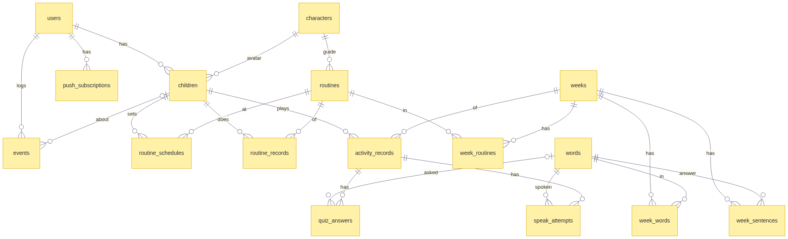
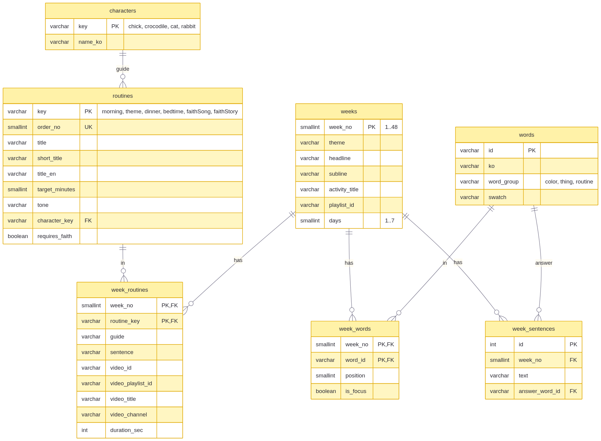
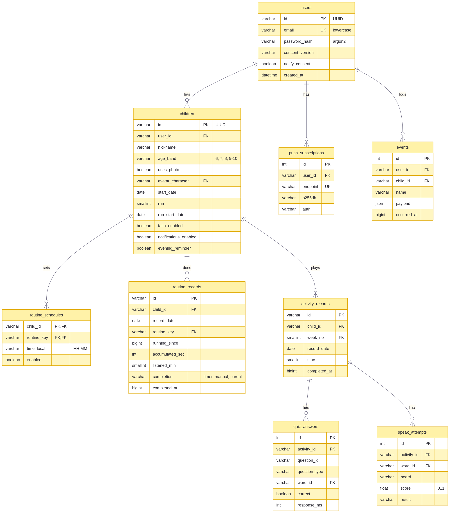

SoundsFun Bridge · MVP 문서 v2 · 05
데이터베이스 설계서
관계형 DB 16개 테이블입니다. 개발은 SQLite, 운영은 PostgreSQL을 쓰며 모델은 한 벌(apps/api/app/models.py, SQLAlchemy 2.0)입니다. 실제 DDL은 docs/schema/schema.postgresql.sql, schema.sqlite.sql에 뽑아 두었습니다.
설계 원칙
- 3정규형. 반복되는 값은 참조 테이블로 뺀다. 루틴 이름·분은
routines에만, 주차마다 바뀌는 영상은 week_routines에만 있다.
- 무결성은 DB가 지킨다. API가 검사하더라도 외래키·유니크·체크 제약을 모두 건다. API를 거치지 않은 잘못된 값도 DB가 거부한다(테스트로 확인).
- 지울 때의 규칙을 정해 둔다. 사용자 쪽은 CASCADE, 콘텐츠 참조는 RESTRICT.
- 사진은 저장하지 않는다.
uses_photo 여부만 둔다.
- 멱등 키. 하루·루틴당 기록은 한 줄(
UNIQUE). 같은 요청이 여러 번 와도 줄이 늘지 않는다.
전체 관계

콘텐츠 영역
앱의 콘텐츠 JSON을 서버가 시작할 때 읽어 채웁니다(멱등 시드). 운영자가 영상을 바꾸려면 week_routines 한 줄만 고치면 됩니다.

사용자·기록 영역

테이블 명세
characters — 캐릭터
| 컬럼 |
형 |
제약 |
설명 |
| key |
VARCHAR(16) |
PK |
chick · crocodile · cat · rabbit |
| name_ko |
VARCHAR(16) |
NOT NULL |
병아리 · 악어 · 고양이 · 토끼 |
routines — 루틴 정의
| 컬럼 |
형 |
제약 |
설명 |
| key |
VARCHAR(16) |
PK |
morning · theme · dinner · bedtime · faithSong · faithStory |
| order_no |
SMALLINT |
NOT NULL, UNIQUE, > 0 |
길에서의 번호 |
| title / short_title / title_en |
VARCHAR |
NOT NULL |
아침 노래 / 아침 / Morning Song |
| target_minutes |
SMALLINT |
NOT NULL, > 0 |
20 · 30 · 20 · 20 |
| tone |
VARCHAR(16) |
NOT NULL |
디자인 토큰의 색 이름 |
| character_key |
VARCHAR(16) |
FK → characters (RESTRICT) |
정거장 캐릭터, 스티커 그림 |
| requires_faith |
BOOLEAN |
NOT NULL, 기본 false |
하잉RTA를 켠 주말에만 |
weeks — 주차
| 컬럼 |
형 |
제약 |
설명 |
| week_no |
SMALLINT |
PK, 1–48 |
주차 |
| theme |
VARCHAR(32) |
NOT NULL |
Colors |
| headline / subline / activity_title |
VARCHAR(64) |
NOT NULL |
화면 문구 |
| playlist_id |
VARCHAR(64) |
NOT NULL |
유튜브 재생목록 |
| days |
SMALLINT |
NOT NULL, 1–7, 기본 7 |
한 주의 날 수 |
week_routines — 주차별 루틴 콘텐츠
| 컬럼 |
형 |
제약 |
설명 |
| week_no |
SMALLINT |
PK, FK → weeks (CASCADE) |
|
| routine_key |
VARCHAR(16) |
PK, FK → routines (RESTRICT) |
|
| guide |
VARCHAR(128) |
NOT NULL |
안내 한 줄 |
| sentence |
VARCHAR(128) |
NOT NULL |
오늘의 한 문장 |
| video_id |
VARCHAR(16) |
NULL |
영상 하나일 때 |
| video_playlist_id |
VARCHAR(64) |
NULL |
재생목록일 때 |
| video_title / video_channel |
VARCHAR |
NOT NULL |
|
| duration_sec |
INTEGER |
NULL 또는 > 0 |
영상 길이 |
체크: video_id와 video_playlist_id 중 하나는 있어야 한다.
words · week_words · week_sentences — 단어와 문장
| 테이블 |
컬럼 |
제약 |
| words |
id PK, ko, word_group, swatch |
word_group IN ('color','thing','routine') |
| week_words |
(week_no, word_id) PK, position, is_focus |
FK 둘, UNIQUE(week_no, position), position > 0 |
| week_sentences |
id PK, week_no FK, text, answer_word_id FK |
UNIQUE(week_no, text) |
users — 부모 계정
| 컬럼 |
형 |
제약 |
설명 |
| id |
VARCHAR(36) |
PK |
UUID |
| email |
VARCHAR(255) |
NOT NULL, UNIQUE, email = lower(email) |
소문자로만 저장 → 대소문자 중복 가입 방지 |
| password_hash |
VARCHAR(255) |
NOT NULL |
argon2 |
| consent_version |
VARCHAR(32) |
NOT NULL |
동의한 약관 판 |
| notify_consent |
BOOLEAN |
NOT NULL |
알림 수신 동의 |
| created_at |
DATETIME |
NOT NULL |
|
children — 아이
| 컬럼 |
형 |
제약 |
설명 |
| id |
VARCHAR(36) |
PK |
UUID |
| user_id |
VARCHAR(36) |
FK → users (CASCADE), INDEX |
|
| nickname |
VARCHAR(16) |
NOT NULL, length(trim(nickname)) > 0 |
공백만은 안 됨 |
| age_band |
VARCHAR(8) |
IN ('6','7','8','9-10') |
|
| uses_photo |
BOOLEAN |
NOT NULL |
사진은 기기에만 |
| avatar_character |
VARCHAR(16) |
FK → characters (RESTRICT), NULL 가능 |
|
| start_date |
DATE |
NOT NULL |
처음 시작한 날 |
| run |
SMALLINT |
≥ 1 |
몇 번째 도는지 |
| run_start_date |
DATE |
>= start_date |
이번 회차 시작일 |
| faith_enabled |
BOOLEAN |
기본 false |
하잉RTA 주말 |
| notifications_enabled / evening_reminder |
BOOLEAN |
기본 true |
|
체크: uses_photo OR avatar_character IS NOT NULL — 아바타가 없는 아이는 없다.
routine_schedules — 알림 시각
| 컬럼 |
형 |
제약 |
| child_id |
VARCHAR(36) |
PK, FK → children (CASCADE) |
| routine_key |
VARCHAR(16) |
PK, FK → routines (RESTRICT) |
| time_local |
VARCHAR(5) |
HH:MM 24시간 형식 체크, INDEX |
| enabled |
BOOLEAN |
기본 true |
시간 형식 체크는 DB마다 문법이 달라 방언별로 선언했습니다. PostgreSQL은 정규식 ~ '^([01][0-9]|2[0-3]):[0-5][0-9]$', SQLite는 GLOB.
routine_records — 루틴 기록
| 컬럼 |
형 |
제약 |
설명 |
| id |
VARCHAR(36) |
PK |
|
| child_id |
VARCHAR(36) |
FK → children (CASCADE) |
|
| record_date |
DATE |
NOT NULL |
기기의 그날 |
| routine_key |
VARCHAR(16) |
FK → routines (RESTRICT) |
|
| running_since |
BIGINT |
NULL |
흐르는 중이면 시작 시각(ms) |
| accumulated_sec |
INTEGER |
≥ 0 |
멈추기 전까지 쌓인 초 |
| listened_min |
SMALLINT |
≥ 0 |
인정된 분 |
| completion |
VARCHAR(8) |
NULL 또는 IN ('timer','manual','parent') |
어떻게 완료했나 |
| completed_at |
BIGINT |
NULL |
완료 시각(ms) |
| updated_at |
DATETIME |
NOT NULL |
|
| 제약 |
뜻 |
UNIQUE(child_id, record_date, routine_key) |
하루·루틴당 한 줄 |
(completion IS NULL) = (completed_at IS NULL) |
완료 방식과 시각은 함께 있거나 함께 없다 |
completed_at IS NULL OR running_since IS NULL |
끝난 기록은 시간이 흐르지 않는다 |
INDEX(child_id, record_date) |
주간·월간 조회 |
activity_records · quiz_answers · speak_attempts — 소리활동
| 테이블 |
핵심 제약 |
| activity_records |
UNIQUE(child_id, week_no, record_date), stars ≥ 0, FK child(CASCADE)·week(RESTRICT) |
| quiz_answers |
UNIQUE(activity_id, question_id), question_type IN (pickImage, pickWord, match, sentenceColor), response_ms ≥ 0, (question_type = 'match') = (word_id IS NULL) — 짝 맞추기만 단어가 없다 |
| speak_attempts |
UNIQUE(activity_id, word_id), score BETWEEN 0 AND 1, result IN (pass, passAfterRetry, passByParent, given, skipped) |
push_subscriptions · events
| 테이블 |
핵심 제약 |
| push_subscriptions |
endpoint UNIQUE, FK user (CASCADE) |
| events |
FK user (CASCADE), FK child (SET NULL) — 아이를 지워도 익명 통계는 남는다 |
지울 때의 규칙
| 지우는 것 |
함께 지워지는 것 |
막히는 경우 |
| users 한 줄 |
children → schedules, records, activities → answers, attempts / push_subscriptions / events |
– |
| children 한 줄 |
위의 아이 아래 전부. events.child_id는 NULL로 |
– |
| weeks 한 줄 |
week_routines, week_words, week_sentences |
그 주차의 activity_records가 있으면 RESTRICT |
| routines · characters · words |
– |
참조하는 줄이 있으면 RESTRICT |
무결성 검증
apps/api/tests/test_api.py에서 API를 거치지 않고 DB에 직접 넣어 거부되는지 확인합니다.
| 시도 |
막는 제약 |
| 완료 방식만 있고 완료 시각이 없는 기록 |
ck_routine_records_completion_pair |
없는 완료 방식 later |
ck_routine_records_completion |
| 음수 초 |
ck_routine_records_non_negative |
없는 루틴 nap, 없는 아이, 없는 부모 |
외래키 |
| 같은 날·같은 루틴 두 줄 |
uq_routine_records_day_routine |
공백뿐인 이름, 연령 12 |
ck_children_nickname_not_blank, ck_children_age_band |
SQLite는 연결마다 PRAGMA foreign_keys=ON을 켜서 외래키를 지키게 했습니다.
자주 쓰는 질의
-- 주간 완료율 (지원서 지표: 주간 완료율 65%)
SELECT c.id,
COUNT(r.completed_at) * 1.0 / (7 * 4) AS weekly_rate
FROM children c
LEFT JOIN routine_records r
ON r.child_id = c.id
AND r.record_date BETWEEN :monday AND :sunday
GROUP BY c.id;
-- 지금 알림을 보낼 대상 (매분 실행)
SELECT s.child_id, s.routine_key
FROM routine_schedules s
JOIN children c ON c.id = s.child_id AND c.notifications_enabled
LEFT JOIN routine_records r
ON r.child_id = s.child_id AND r.routine_key = s.routine_key AND r.record_date = :today
WHERE s.time_local = :hhmm AND s.enabled AND r.completed_at IS NULL;
-- 아이들이 어려워하는 단어
SELECT word_id, AVG(score) AS avg_score, COUNT(*) AS tries
FROM speak_attempts GROUP BY word_id ORDER BY avg_score;